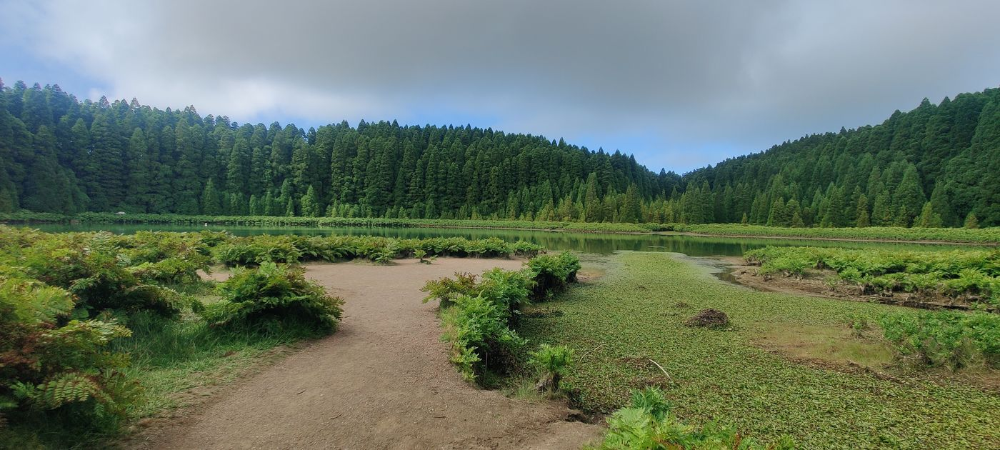

Research
Current Research Themes

Biodiversity Footprints in Anthropic Ecosystems
One of our research themes focuses on the study of soil biodiversity signatures associated with ecosystems historically manipulated by humans — the so-called anthropic ecosystems, in particular the Amazonian Dark Earths (ADEs; see our network webpage). In this project we collaborate with Prof. George Brown at EMBRAPA-Forestry, Brazil, whose established network of interdisciplinary researchers — spanning anthropology, archaeology, geochemistry, radiocarbon dating and ecology — has provided an enormously rich knowledge base on ADEs.
Under this theme we have secured funding for several complementary projects, including “A Worm's Trail: Implementing a collaborative network for the study of Historical and Recent Land Use and Soil Management in Neotropical Rainforests” and “Tracking Historical and Recent Human Settlement, Land use & Migration in Neotropical Rainforests using Ecosystem Engineers” (Grant NE/M017656/1). These projects investigate the role of soil ecosystem engineers, organic matter and nutrients in ADE formation, use DNA barcoding to describe the associated ecosystem-engineer community, and apply genomics of a peregrine earthworm species to mirror historical human migration across the Amazon Basin.

Metazoans Living on a Volcanic Edge
Another sphere of our work covers animals living on, or close to, extreme geothermal environments. In 2013, Luis Cunha, Armindo Rodrigues and Prof. Peter Kille secured FCT funding to study earthworms as models in this conspicuous environment, later extended by a NERC grant — “Stress in a hot place: Characterising the ecogenomics of a pantropical sentinel inhabiting multi-stressor volcanic soils” (NE/I026022/1) — deriving a mechanistic understanding of how the invasive earthworm Amynthas gracilis adapts to cocktails of physico-chemical stressors in active volcanic soils, with applications in bioeconomy, medicine and environmental management.

Collaborations
Through his period at Cardiff University, Luis Cunha established collaborative links with Dr. Dave Spurgeon (Centre for Ecology & Hydrology), Prof. Mark Hodson (York University), and colleagues Profs Mike Bruford, Kille, Weightman and Dr. Pablo Orozco-terWengel. Longstanding international links include Prof. Rafael Montiel (LANGEBIO, Mexico) — together describing the genome of an entomopathogenic nematode — and Dr. Barois (INECOL, Mexico) on earthworm-associated microbiomes in geothermal fields. Current collaborations extend to Prof. Barbara Plytycz (Jagiellonian University, Poland) and Prof. Laszlo Molnar (University of Pecs, Hungary) on the evolution of the neural-immune axis in earthworm regeneration.
Projects & Funding
- 2027-2030 HidroDataCube4EU (PI at UC) · PI: Tomislav Hengl Horizon Europe (Grant Agreement XXXXXX — HORIZON-MISS-2025-05-SOIL-03) — €5,961,049.60
- 2026-2029 INOVASOLO - Plataforma de Excelência e Inovação em Investigação e Monitorização do Solo: monitorizar e responder aos desafios da degradação da saúde do solo na Região Centro (Researcher) · PI: Jose Paulo Sousa CCDRC — €1.2M
- 2025–2028 La Caixa Monte Regen Hub (PI at UC) · PI: Diogo Pinho La Caixa Promove Programme 2023 – Innovative Pilot Projects (Ref. PL25-00042) — €199,939
- 2024–2028 SYBERAC – Towards a SYstems-Based, holistic Environmental Risk Assessment of Chemicals (Researcher) · PI: Nico van den Brink Horizon Europe (Grant Agreement 101135213 — HORIZON-CL6-2023-BIODIV-01-1) — €4.7M
- 2024–2028 EESE (EFSA) – EU Environmental Scenarios for ERA of Non-Target Organisms (Researcher) · PI: Nico van den Brink Horizon Europe (Grant Agreement 101135213 — OC/EFSA/PREV/2023/02) — €6M
- 2024–2026 GRASS4FUN – Monitoring the contribution of European grasslands to the conservation of soil biodiversity and ecosystem function under multiple global change stressors (Researcher) · PI: Manuel Delgado-Baquerizo & Pablo García-Palacios Horizon Europe (Grant Agreement 101135213 — HORIZON-CL6-2023-BIODIV-01-1) — €0.5M
- 2024–2028 VALERECO – Valorization Legumes Related Ecosystem Services (Researcher) · PI: Ilias Travlos Horizon Europe (Grant Agreement 101135472 — HORIZON-CL6-2023-BIODIV-01-16) — €4.9M
- 2025–2028 PHAME – Advancing sustainable agriculture with PHA Mulch Films Innovations with Economic Impact (Researcher) · PI: Diogo Proença FCT – COMPETE2030 – FEDER (Ref. COMPETE2030-FEDER-00711600) — €212,000
- 2025–2028 PRESINMED – Preserving the singularity of Mediterranean high-mountain biodiversity hotspots: a NBS approach (Researcher) · PI: Susana Rodríguez Echeverría Horizon Europe (Grant Agreement 101135213 — HORIZON-CL6-2023-BIODIV-01-1) — €0.73M
- 2023–2027 BENCHMARKS – Building a European Network for the Characterisation and Harmonisation of Monitoring Approaches for Research and Knowledge on Soils (WP Leader & UC Coordinator) · PI: Rachel Creamer Horizon Europe (HORIZON-MISS-2021-SOIL-02-02) — €12M
- 2023–2026 GOOD – Agroecology for Weeds (Researcher) · PI: Helena Freitas Horizon Europe (Grant Agreement 101083589 — HORIZON-CL6-2022-FARM2FORK-02-01) — €4,988,679.25
- 2023–2026 BETTER-B – Improving bees’ resilience to stressors by restoring harmony and balance (Researcher) · PI: Dirk de Graaf Horizon Europe (Grant Agreement 101081444 — HORIZON-CL6-2022-BIODIV-02-03) — —
- 2022–2029 PARC – European Partnership for the Assessment of Risks from Chemicals (Researcher (Task 6.4.4.c)) · PI: ANSES Horizon Europe (Grant Agreement 101057014) — —
- 2022–2025 RedeSusTERRA – Laboratory for the Sustainability of Land Use and Ecosystem Services (Researcher) · PI: Ana Paula Nunes PRR (PRR-C05-i03-I-000093-LA6.2) — €157,079.85
- 2021–2025 SOPLAS – Macro and Microplastic in Agricultural Soil Systems (Researcher) · PI: Peter Fiener Horizon Europe (MSCA-ITN-2020, Project nº 955334) — —
- 2021–2023 F4F – FOREST for FUTURE (Pilot Project PP6 – MyFORESt) (Researcher) Portugal 2020 / European Social Fund (CENTRO-08-5864-FSE-000031) — —
- 2021 Harvesting species occurrence data from barcode databases (Supervisor) COST Action EUdaphobase (VM grant) — €3,000
- 2019–2023 CULTIVAR – Network of competences for sustainable development and innovation in the agri-food sector (Researcher) · PI: Helena Freitas Portugal 2020 / FEDER (CENTRO-01-0145-FEDER-000020) — —
- 2019–2025 Through the Path of the Giant – The role of tortoise corridors for earthworm invasion in the Galapagos (Researcher) · PI: Marta Novo National Geographic Society (NGS-62087R-19) — $30,000
- 2019–2024 EUdaphobase – European Soil-Biology Data Warehouse for Soil Protection (Substitute Member) · PI: David Russell Horizon Europe (COST Action CA18237) — —
- 2018–2024 ECOSTACK – Stacking of ecosystem services for crop protection, pollination and productivity (Researcher) · PI: Francesco Pennachio Horizon Europe (Grant Agreement 773554 — H2020-SFS-2016-2017/H2020-SFS-2017-2) — —
- 2018–2024 Implementation of Agroforestry Systems (AFS) in São Tomé and Angola (Researcher) · PI: Maria do Céu Madureira & José Paulo Sousa African Union (HRST/ST/AURG-II/CALL1/2016) — —
- 2019 METAFUN – Untangling the functional network of an anthropogenic soil (PI) USW-CESRIS research grant — €9,998
- 2018 Dirty Footprints: Soil Biodiversity in Historical Anthropogenic Ecosystems (PI) FCT Scientific Employment Stimulus — ~€230,000
- 2017 Integrating remote sensing & spectral analysis in Amazonian biodiversity (Co-I) · PI: Thomas Meager STFC (ST/P003281/1) — €30,986
- 2016 Untangling the Volcanic Earthworm Genome (PI) PacBio SMRT grant + crowdfunding — $5,237
- 2015 Ligand-binding speciation in volcanic earthworms (Co-I) · PI: Peter Kille STFC Beamtime (SP11632) — €120,000
- 2015 HookaWorm – Marie Curie Global Fellowship (PI) H2020-MSCA-IF-2014 (Grant 660378) — €209,279
- 2015 Tracking Human Settlement in Neotropical Rainforests (Co-I) · PI: Peter Kille NERC-IOF (NE/M017656/1) — €269,691
- 2015 A Worm's Trail: Collaborative network Neotropical Rainforests (Co-I) · PI: Peter Kille NERC-DIR (NE/M017656/1) — €37,718
- 2012 HOLI-Biopest: Biomonitoring pesticide exposure in agriculture (Team Member) · PI: Patricia Garcia FLAD — €40,000
- 2011 Stress in a hot place: ecogenomics of a pantropical sentinel (Co-I) · PI: Peter Kille NERC (NE/I026022/1) — €380,000
- 2011 Azorean furnace of evolution: phylogeography & ecotoxicogenomics (Researcher) · PI: Armindo Rodrigues FCT (PTDC/AAC-AMB/115713/2009) — €120,000
- 2010 Scientific Meeting “A volcanic furnace of Evolution” (PI) Regional Government of Azores (M3.2.4/I/003A/2010) — €4,740
In the field